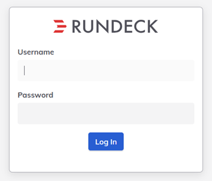
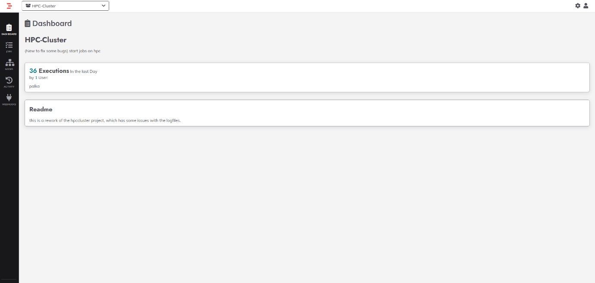
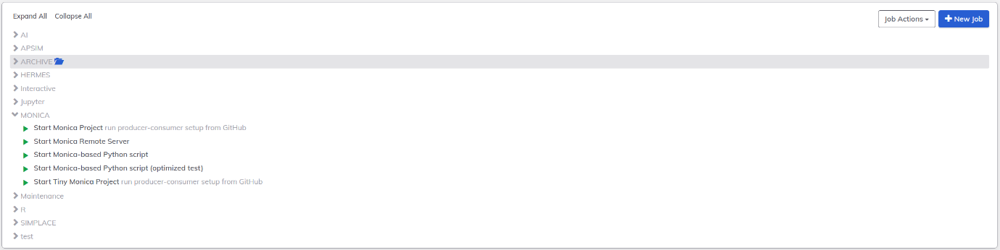
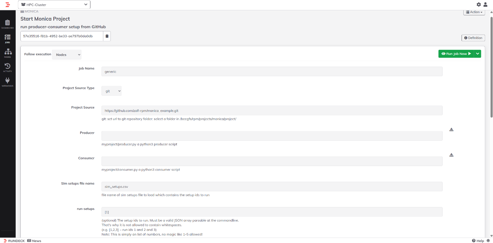
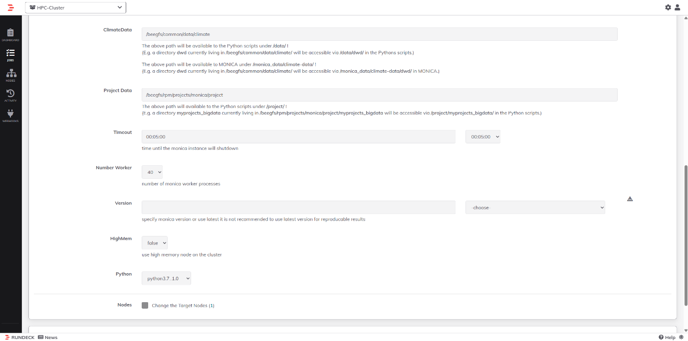

Running MONICA via Rundeck (ZALF MONICA Users)
Overview
MONICA users at ZALF who need to perform computationally intensive or large-scale simulations can run MONICA on the HPC cluster. To simplify cluster access and standardize simulation workflows, the Model and Simulation Infrastructure working group provides a web-based interface called Rundeck:
Rundeck acts as a frontend between the user and the HPC system. Instead of submitting jobs manually via the command line, users configure and start MONICA simulations through predefined Rundeck jobs. These jobs automatically:
- Set up the computing environment
- Distribute simulation tasks
- Execute simulations using a producer–consumer setup
How to Run MONICA Using Rundeck
This section provides a step-by-step guide to starting a MONICA simulation on the HPC cluster using Rundeck.
Step 1: Log in to Rundeck

-
Open the Rundeck web interface in your browser:
Rundeck Web Interface -
Log in using your HPC credentials:
- Username
- Password
- Yubikey (2-factor authentication)
-
Under Projects, select HPC-Cluster.
Step 2: Navigate to the MONICA jobs

-
In the left-hand menu, click Jobs.
-
Go to the MONICA job folder.

-
You will see several MONICA-related jobs. The most relevant ones are:
- Start Monica Project (multi-node)
- Start Tiny Monica Project (single node)
Step 3: Open the MONICA job
-
Click on Start Monica Project or Start Tiny Monica Project.
-
The job configuration form will open.


- All parameters required to start the MONICA simulation are specified on this page.
Step 4: Configure the project source
Project Source Type
-
git: clone a repository for this run
o If selected, provide the repository URL. Example: Rundeck Web Interface
-
folder: use an existing folder on the cluster
o If selected, provide an absolute path on BeeGFS
Step 5: Specify producer and consumer scripts
Producer
- Path (relative to the project root) of the producer script. Example:
myproject/producer.py
Consumer
- Path (relative to the project root) of the consumer script. Example:
myproject/consumer.py
Step 6: Select simulation setups
Sim setups file name
- Name of the CSV file containing the simulation setup definitions:
Example: sim_setups.csv
run-setups
- JSON array of setups IDs to run. Examples: [1] will run setup ID 1 and [1,2,3] will run setup IDs 1, 2, and 3. The value must not contain spaces.
Step 7: Configure data paths
Climate data
- Specify the path to the climate directory on BeeGFS.
- If the climate path is already handled inside your producer script, this field does not need to be changed.
Project Data
- Specify the path to your project data directory on BeeGFS.
- If the project data path is already handled inside your producer script, this field does not need to be changed.
Step 8: Configure runtime parameters
Timeout
- Specify the expected runtime of your simulation.
- You can either enter a value manually or select one from the dropdown menu.
Number Worker
- Total number of MONICA worker processes
- For large simulations, increase this value to distribute the workload.
- For Start Monica Project, workers are distributed across multiple nodes.
- For Start Tiny Monica Project, all workers run on a single node.
HighMem
- Set to true to run on high-memory nodes.
- Set to false to use standard compute nodes.
Step 9: Select MONICA and Python versions
Version - Choose the MONICA version from the dropdown menu. - It is strongly recommended to select a specific version to ensure reproducible results.
Python
- Select the Python environment used for the producer and consumer scripts from the dropdown menu.
- It is recommended to select: python3.10_3
Step 10: Start the Job
- Review all parameters carefully.
- Click Run Job Now.
- Rundeck will start the job and redirect you to the execution output page.
Step 11: Retrieve Simulations Results
Simulation outputs are written to:
/beegfs/rpm/projects/monica/out/<USER>_<JOB_EXEC_ID>_<DATE>/
You can use tools such as WinSCP to access and download your simulation results from the HPC system.